TEMA 08
Propiedades CSS
Material de estudio organizado a partir del PDF correspondiente. Se conserva el contenido textual del documento y se distribuye por páginas para facilitar su consulta.
Página 1
Propiedades CSS
Página 2
1. Introducción y contextualización práctica
3
2. Propiedades CSS
4
2.1. Propiedades del texto
4
3. Propiedades de las fuentes
5
4. Propiedades de las listas
6
5. Pseudoclases y pseudoelementos
7
5.1. Pseudoclases para acceder a hijos o hermanos
7
5.2. Pseudoclases de estado
7
5.3. Pseudoelementos
7
5.4. Ejemplo pseudoclases y pseudoelementos
6. Propiedades de las tablas
7. Modelo de cajas
10
7.1. Propiedades asociadas a las cajas
11
7.2. Tamaño de las cajas
12
7.3. Propiedades que debemos considerar en el modelo de cajas
13
7.4. Ejemplo de las propiedades de las cajas
13
8. Caso práctico 1: “Viajes más frecuentes”
14
9. Caso práctico 2: “Tablero de ajedrez”
14
10. Resumen y resolución del caso práctico de la unidad
15
11. Webgrafía
16 cualquier medio o procedimiento, incluidos la reprografía y el tratamiento informático.
Página 3
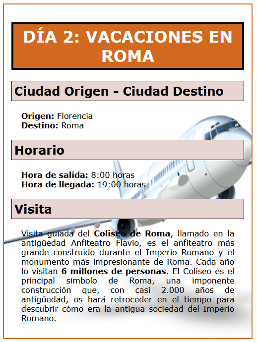
1. Introducción y contextualización práctica
CSS está en continua evolución, y el número de propiedades que se pueden usar en las reglas CSS es cada vez más elevado, lo cual permite un mayor control del aspecto visual de la página web. Conocer estas propiedades, así como saber cómo se aplican a los elementos HTML, es importante. Existen propiedades asociadas a las tablas, a las imágenes, a los textos, etc. Algunas de ellas son generales y otras son específicas de los elementos HTML, las cuales nos van a posibilitar controlar no sólo su aspecto visual, sino también su disposición dentro de la página web. Planteamiento del caso práctico de la unidad. La agencia de viajes Sol y Mar le solicita a Alberto que incluya en su web información sobre los itinerarios de los viajes. Escucha el siguiente audio donde planteamos la contextualización práctica de este tema. Encontrarás su resolución en el apartado «Resumen y resolución del caso práctico de la unidad». Conocer las propiedades CSS. Distinguir entre clases, pseudoclases y pseudoelementos. Practicar el modelo de cajas. https://bit.ly/2NUaDUh
Página 4
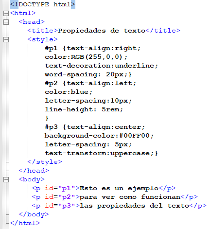
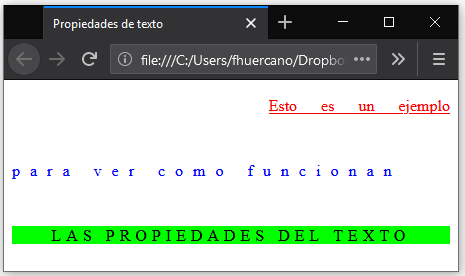
2. Propiedades CSS
Las propiedades CSS estarán condicionadas al elemento HTML al que queramos aplicar un estilo. Las propiedades de las que se dispone en la versión CSS2.1 y CSS3 son numerosas. En este apartado vamos a nombrar las más importantes. Para tener una referencia más global, puedes acceder al siguiente enlace.
2.1. Propiedades del texto
Con estas propiedades, podremos cambiar características del texto que se incluya en la web. En la siguiente tabla se muestran algunas, y en este enlace encontraréis la referencia completa
2.1.1. Ejemplo propiedades del texto
Mostramos un ejemplo de aplicación de algunas propiedades:
Código 1. Propiedades del texto Propiedad Significado Valores text-align Alinear el texto left | right | center | justify color Indica el color del texto Valor RGB, HEX o nombre background-color Indica el color de fondo Valor RGB, HEX o nombre text-decoration Efectos de tachado, subrayado, etc. none | underline | overline | .. letter-spacing Espacio entre caracteres normal | longitud word-spacing Espacio entre palabras normal | longitud text-transform Mayúsculas o minúsculas uppercase | lowercase line-height Espacio entre líneas Longitud | porcentaje Tabla 1. Propiedades del texto.
Página 5
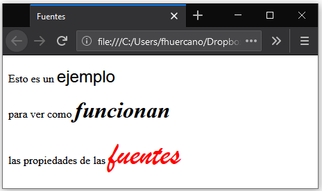
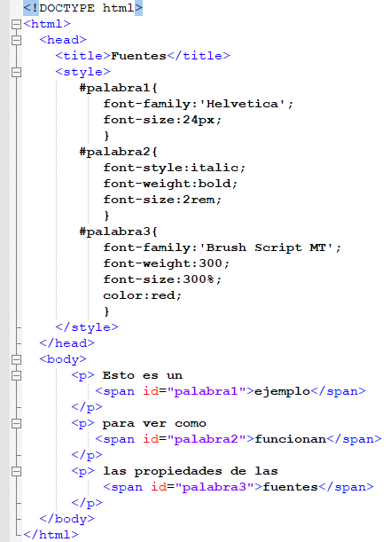
3. Propiedades de las fuentes
Estas propiedades van a controlar las características de las fuentes con las que trabajaremos en la web. Las propiedades principales se muestran en la siguiente tabla y, para una referencia completa, podéis acceder al siguiente enlace. A continuación, podéis ver un ejemplo. Existe la posibilidad de cargar fuentes de familias diferentes a las fuentes seguras (Safe Fonts), descargando la fuente, o con un enlace a sitios de descarga como Google Fonts. En el apartado dedicado a CSS3 detallaremos cómo hacerlo. Propiedad Significado Valores font-family Familia de la fuente nombre-familia font-style Estilo de la fuente normal | italic font-weight Anchura bold | 100 | 200 | .. font-size Tamaño de la fuente Longitud | porcentaje | médium | large | … Tabla 2. Propiedades de las fuentes. Audio 1. “Fuentes seguras” https://bit.ly/38skz12 Código 2. Propiedades de las fuentes.
Página 6
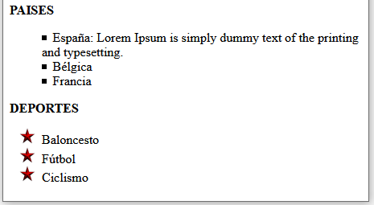
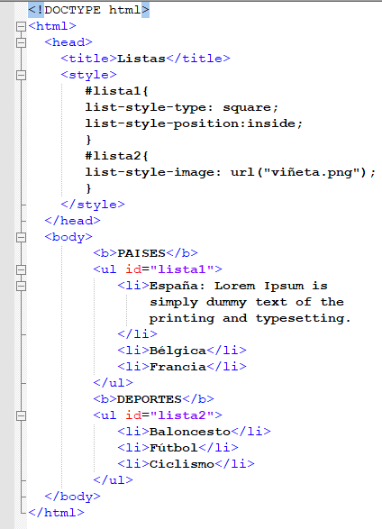
4. Propiedades de las listas
Las listas pueden configurarse para cambiar su viñeta o alineación, entre otras cosas. Estas son las principales propiedades. Podéis consultar una referencia completa en el siguiente enlace. Como se observa, se puede indicar una imagen como viñeta, elegir algunas viñetas predefinidas, o indicar cierto sangrado en la lista. Código 3. Propiedades de las listas. Propiedad Significado Valores list-style-type Estilo de las viñetas None |disc | circle | … list-style-image Imagen de la viñeta url(“http://... “) list-style-position Posición de la viñeta Inside | outside Tabla 3. Propiedades de las listas.
Página 7
5. Pseudoclases y pseudoelementos
Con las pseudoclases y los pseudoelementos, podremos acceder a ciertas partes de los elementos HTML sin tener que crear nuevas clases o identificadores. Las pseudoclases se indican con dos puntos (:), y los pseudoelementos con dos puntos (::).
5.1. Pseudoclases para acceder a hijos o hermanos
Con estas pseudoclases accederemos a elementos contiguos al elemento padre.
5.2. Pseudoclases de estado
Dependiendo de su estado, se van a poder asociar características a ciertos elementos HTML. Es muy frecuente usarlo en etiquetas de enlace <a>, pero se pueden aplicar a otros elementos.
5.3. Pseudoelementos
Con los pseudoelementos podremos acceder a partes concretas del elemento HTML, para complementarlas o modificarlas. Con el pseudoelemento ::before y ::after podremos añadir contenido con la propiedad content. En el siguiente ejemplo se muestra cómo usar esta propiedad. Vídeo 1. “Crear menú vertical con listas” https://bit.ly/3dNaGfi Pseudoclase Significado :first-child Primer hijo :last-child Último hijo :nth-child(n) Enésimo hijo. Se pueden indicar los valores odd y even entre otros para indicar los hijos impares o pares. Tabla 4. Pseudoclases acceso. Pseudoclase Significado :link No ha sido aún visitado :visited Enlace visitado por el usuario :hover Ocurre cuando el cursor pasa por encima. :active Se activa cuando el usuario pincha en el elemento. :focus Se activa cuando el usuario pincha en el elemento, lo toca, o lo selecciona con la tecla TAB Tabla 5. Pseudoclases de estado. Pseudoelementos Significado ::first-line Primera línea de texto ::first-letter Primera letra del texto ::before Antes del texto. ::after Después del texto. Tabla 6. Pseudoelementos.
Página 8
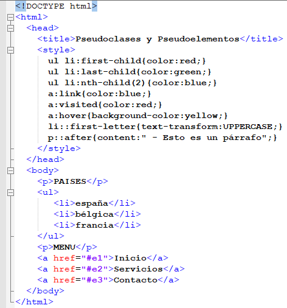
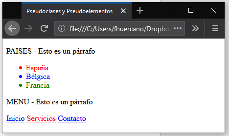
5.4. Ejemplo pseudoclases y pseudoelementos
En este ejemplo, mostramos cómo se aplican las pseudoclases y los pseudoelementos a elementos de la página web. Como se observa, con :first-child se aplica el color rojo al primer elemento de la lista; con last-child se aplica el color verde al último, y con nth-child(2) se aplica el color azul al segundo elemento. A este último caso podríamos haberle indicado even y, como el 2 es par, tendría el mismo efecto. En el ejemplo, establecemos que cuando el enlace aún no ha sido visitado (:link) se muestre azul; cuando se haya visitado (:visited), en rojo, y que cuando se pase el cursor por encima (:hover) del enlace, se muestre el amarillo como color de fondo. Por último, se ponen en mayúsculas las iniciales de los países (::first-letter) y se añade después(::after) de todos los párrafos el contenido (content) «- Esto es un párrafo».
6. Propiedades de las tablas
Al igual que en otros elementos HTML, en las tablas se podrá cambiar el color del fondo, del texto, el ancho, la altura, etc. Pero las tablas también disponen de una serie de propiedades que nos van a permitir controlar ciertos aspectos propios de este elemento HTML. Propiedad Significado Valores caption-side Ubicación del título top | bottom table-layout Formato de la tabla auto | fixed border-collapse Se indica la unión o no de los bordes collapse | separate border-spacing Espacio entre celdas longitud empty-cells Si las celdas están vacías, no se muestra el borde show | hide width Ancho del elemento longitud heigth Alto del elemento longitud vertical-align Alineación vertical top, bottom, middle Tabla 7. Propiedades de las tablas. Código 4. Uso de pseudoclases y pseudoelementos.
Página 9
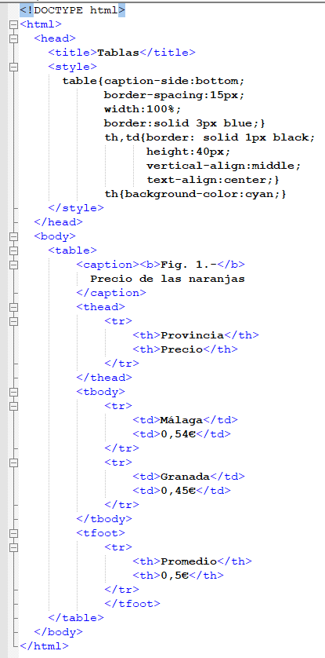
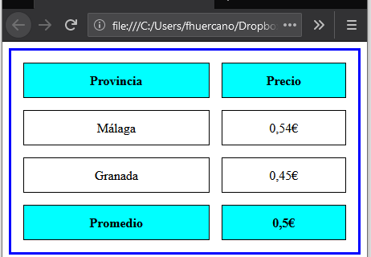
En el siguiente ejemplo, se ponen en práctica las propiedades mostradas en la tabla. Es interesante que te fijes en la propiedad vertical-align, que alinea el contenido verticalmente, y en la separación entre celdas (border-spacing). En el caso de que se unieran los bordes (border-collapse), la separación entre celdas no tendría efecto. Código 5. Propiedades de las tablas.
Página 10
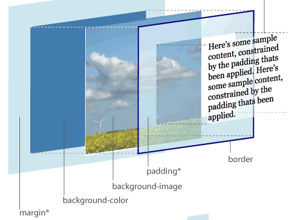
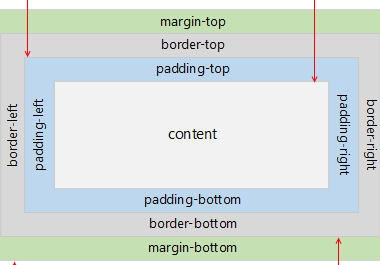
7. Modelo de cajas
El modelo de cajas es uno de los aspectos más importantes a la hora de diseñar y ubicar elementos en una página web. Este modelo se basa en que todos los elementos de una página HTML son considerados cajas rectangulares. De esta manera, cuando insertamos un párrafo, un div, una imagen o una tabla, se crean cajas con las características
que se muestran en la siguiente figura:
Concretamente, en la imagen podemos observar:
• Contenido (content): se trata del contenido propiamente dicho y puede ser texto, una imagen, una tabla, etc.
• Relleno (padding): espacio existente entre el contenido y el borde. Es transparente.
• Borde (border): línea que encierra tanto el contenido como el relleno.
• Imagen de fondo (background-image).
• Color de fondo (background-color).
• Margen (margin): Espacio que va a existir con
el resto de cajas contiguas al elemento HTML. Es transparente. El orden de los elementos que aparecen en la figura es importante. En consecuencia, si se indican tanto la imagen de fondo como el color de fondo, la imagen tendrá prioridad, porque está por delante en la jerarquía de capas mostrada. Si la imagen consta de partes transparentes, permitirá ver el color de fondo. Para el relleno, borde y margen, se pueden definir valores diferentes para el lado superior, inferior, izquierdo y derecho. www.hicksdesign.co.uk/boxmodel/ )
Página 11
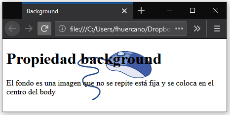
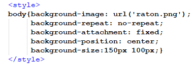
7.1. Propiedades asociadas a las cajas
A continuación, se detallan las propiedades que nos van a permitir modificar el aspecto y comportamiento de la caja. Para indicar de manera independiente valores a los lados de la caja, simplemente hay que añadir el sufijo -top, -right,
-bottom y -left a la propiedad deseada.
En el caso del borde, existe una versión reducida (shorthand) que nos permite indicar el ancho, el estilo, y el color
en una misma propiedad, border. Un ejemplo podría ser el siguiente:
• p {border: 4px solid blue}
Para una referencia completa de la propiedad border se puede consultar el siguiente enlace.
Existen una serie de propiedades asociadas a la imagen de fondo:
• background-position: indica dónde ubicar la imagen.
• background-size: tamaño de la imagen.
• background-repeat: se indica si se repite o no la imagen.
• background-attachment: Se indica si la imagen permanece fija aunque se haga scroll.
Para una referencia detallada de todos los valores de estas propiedades, puedes acceder al siguiente enlace. Recuerda que todos los elementos HTML de una página web son cajas, incluido el body. Por lo tanto, no solo vamos a poder asociar una imagen de fondo a un div, sino que también podemos colocar una imagen como fondo de la página, tal y como se muestra a continuación. Propiedad Significado Valores padding Se indica el tamaño del relleno de la caja longitud | porcentaje margin Se indica el tamaño del relleno de la caja longitud | porcentaje | auto border-width Ancho del borde longitud |thin | … border-color Color del borde color | transparent border-style Estilo del borde none | hidden | dotted | …. background-image Imagen de fondo url(‘..’) Tabla 8. Propiedades de las cajas. Código 6. Propiedad background.
Página 12
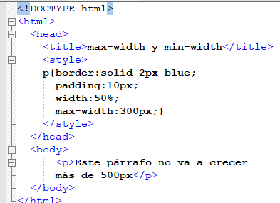
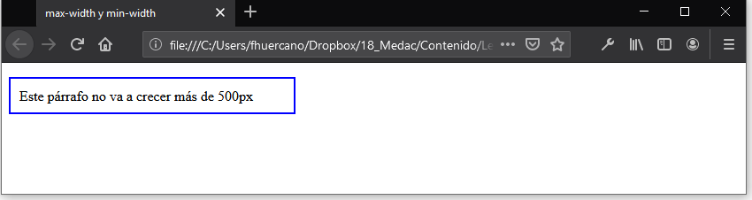
7.2. Tamaño de las cajas
A las cajas les podemos dar un tamaño. Para ello disponemos de las siguientes propiedades. Cuando se indica un valor auto en alguna propiedad, el navegador se encarga de calcular el tamaño dependiendo del contenido del elemento y del espacio existente en la página web. Con los prefijos max- y min- se puede limitar la medida de las cajas. Por ejemplo, si la caja tiene un tamaño expresado en porcentaje y modificamos el de la ventana, dicha caja nunca se reducirá o ampliará más allá de los límites indicados. En el siguiente ejemplo se muestra este comportamiento. En este caso, el párrafo siempre va a intentar tener un tamaño del 50% con respecto al de la ventana, salvo que se amplíe tanto la ventana que se llegue a más de 300px. En ese caso ya no ocuparía el 50% y su tamaño se limitaría a esos 300px. Propiedad Significado Valores width Ancho de la caja auto | tamaño max-width Ancho máximo que puede tener la caja none | tamaño min-width Ancho mínimo 0 | tamaño height Altura de la caja auto | tamaño max-height Altura máxima none | tamaño min-height Altura mínima 0 | tamaño Código 7. Efecto de max-width en un párrafo.
Página 13
7.3. Propiedades que debemos considerar en el modelo de cajas
Hay ciertas propiedades que afectan a la visualización de las cajas. Caben destacar las siguientes:
• Propiedad box-sizing: nos permite indicar cómo se va a calcular el ancho y el alto de una caja. Puede tener
dos valores:
» content-box: cuando se indican los valores de width y height se hace con respecto a content. » border-box: cuando se indican los valores de width y height se hace con respecto a toda la caja, incluido margin y el border.
• Propiedad display: Se puede modificar el comportamiento de una caja modificando su tipo. Los valores
principales son:
» none: se oculta el elemento. » block: se crea la caja como un bloque » inline: esta caja estará en línea y estará incluida en una caja de tipo block. Es interesante indicar que existe una propiedad llamada visibility que también nos permite ocultar elementos. La diferencia con respecto a display:none es que con visibility el elemento se hará invisible, pero continua ocupando espacio. Los valores que puede tener la propiedad visibility son visible y hidden. Una simulación de todos los tipos de display lo puedes ver en el siguiente enlace.
• Propiedad overflow: Mediante esta, controlamos qué debe hacerse cuando el contenido de una caja desborda
su tamaño. Puede tener los siguientes valores:
» visible: aunque el contenido lo desborde, este se muestra fuera de la caja. » hidden: se oculta lo que no quepa en la caja. » scroll: se generan barras de desplazamiento para poder ver todo el contenido, aunque no sean necesarias. » auto: el navegador se encarga de poner barras de scroll si es necesario.
7.4. Ejemplo de las propiedades de las cajas
En el siguiente enlace se muestra un ejemplo con las principales propiedades que se han visto en los apartados anteriores. Cabe comentar que la propiedad border-radius pertenece a CSS3. Esta se utiliza en el ejemplo, pero la estudiaremos en detalle en el tema siguiente. En líneas generales, podemos decir que permite que los bordes de las cajas sean redondeados. Vídeo 2. “Uso de display y visibility” https://bit.ly/2YknSn7
Página 14
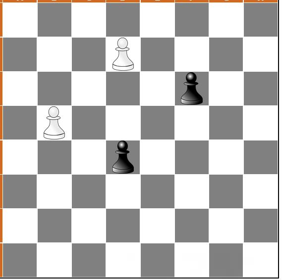
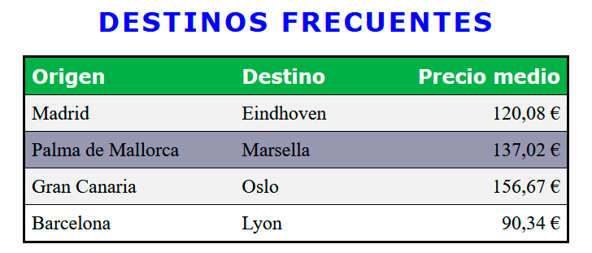
8. Caso práctico 1: “Viajes más frecuentes”
Planteamiento: La agencia de Viajes Sol y Mar se pone en contacto de nuevo con WebMalagaDesign y le comenta a Gloria que quiere incluir más contenido en la web. Nudo: la responsable de la agencia quiere añadir una tabla con los destinos más frecuentes. La tabla debe estar
incluida en la parte superior de la web y debe cumplir las siguientes características:
• Siempre debe ocupar el 50% del ancho de la página y estar centrada.
• Tanto el título de la tabla como la cabecera deben tener el tipo de fuente Verdana. El título debe tener las
letras más separadas que el texto normal de la página.
• El tamaño de la fuente de la cabecera debe ser 1.5, el tamaño de la fuente normal de la página.
• Dentro de la tabla, los orígenes y los destinos deben estar alineados a la izquierda, y los precios a la derecha.
• Debe haber un espacio entre el contenido y el borde de la celda.
• Las filas pares tendrán un color y las impares otro. Cuando el cursor se coloque encima de una fila, esta debe
cambiar de color. Desenlace: puedes ver cómo se visualizaría la solución en el navegador en la siguiente figura, y el código que la implementa, en el anexo del tema. Solución completa: Anexo del tema
9. Caso práctico 2: “Tablero de ajedrez”
Planteamiento: Una empresa de juegos tiene un blog dedicado al ajedrez, y se pone en contacto con WebMalagaDesign porque necesita el diseño de un tablero de ajedrez en HTML y CSS para poder mostrar jugadas. Por ahora, solo solicitan un borrador de la solución en el que se muestren algunos peones blancos y negros, para ver cómo quedaría. Nudo: Alberto habla con Gloria y plantean el código HTML y CSS muy estructurado para que sea fácilmente escalable y, así, poder incluir nuevas jugadas en un futuro. Para realizarlo, han llegado a las siguientes conclusiones
de diseño:
• Tabla 8x8
• Cabeceras que muestren las columnas(letras) y las filas(números)
con un formato diferente. tablero de ajedrez.
Página 15
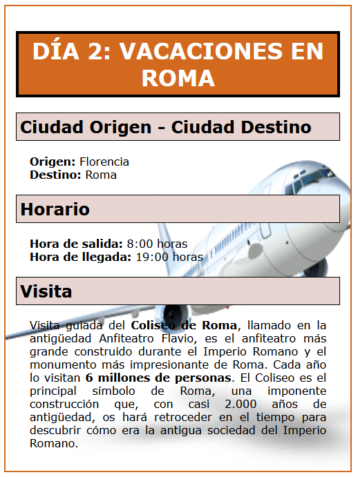
• Las celdas negras y las celdas blancas se indicarán con clases CSS con un color de fondo (blanco o negro)
• Cada celda tiene que estar referenciada con identificadores CS, por ejemplo, id=”A7”
• Cuando se quiera poner una figura del ajedrez en el tablero, se indicará asociando a la clase de la celda una
clase especial que tendrá el nombre de la figura y su color. Por ejemplo, si se quiere poner un peón blanco, la clase sería class=”peon_blanco”.
• La clase con la figura tendrá la imagen de fondo asociada a una imagen con la figura en png.
Este último punto Gloria no lo entiende, porque las celdas ya tienen una clase asociada. ¿Cómo se le puede asociar otra? Alberto le comenta que a una misma celda se le pueden aplicar dos clases. Simplemente hay que indicárselas. Por ejemplo: td{class=”blanco peon_blanco”} Desenlace: Puedes ver la visualización de la solución en el navegador en la siguiente figura, y el código que la implementa, en el anexo del tema. También puedes ver en funcionamiento el caso práctico en el apartado de proyectos de la web WebMalagaDesign.
10. Resumen y resolución del caso práctico de la unidad
En este tema, hemos detallado las propiedades CSS asociadas a los textos, fuentes, listas y tablas. También hemos explicado el funcionamiento de las pseudoclases y de los pseudoelementos, además de su diferencia con respecto al uso de una clase normal. Por último, hemos detallado el modelo de cajas que nos permite controlar la disposición y estructura de la web. También hemos conocido la relación entre contenido y espacios entre elementos. Resolución del Caso práctico de la unidad La información sobre los itinerarios que solicitaba la agencia de viajes podría
quedar representada en la web de la siguiente forma:
Solución: El código completo lo encontrarás en el anexo del tema. Modelo de cajas Pseudoclases y pseudo elementos Fuentes Fuentes Texto Tablas PROPIEDADES CSS
Página 16
11. Webgrafía
CSS Minifer: herramientas de minificación. Open Source Web Design: sitio web que ofrece cientos de plantillas gratuitas con posibilidad de utilizarlas libremente en aplicaciones personales y comerciales. CSS Zen Garden: es una galería distinta a las tradicionales, pero se ha convertido en un referente en lo que se refiere a diseños complejos realizados mediante CSS. Tutorial de CSS: escuela online de CSS.